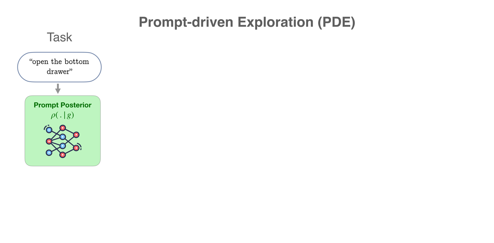
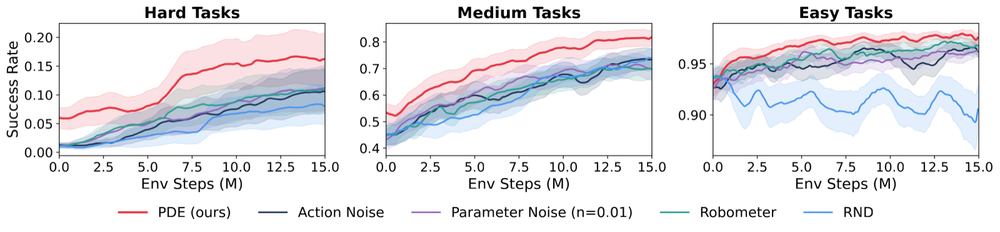
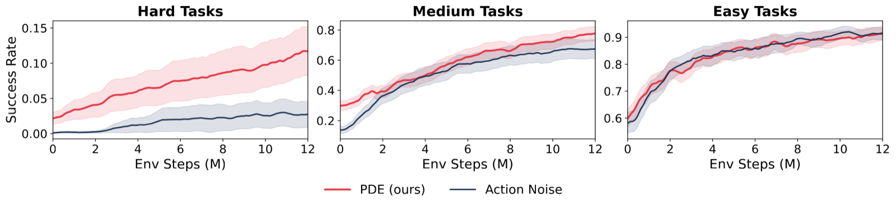
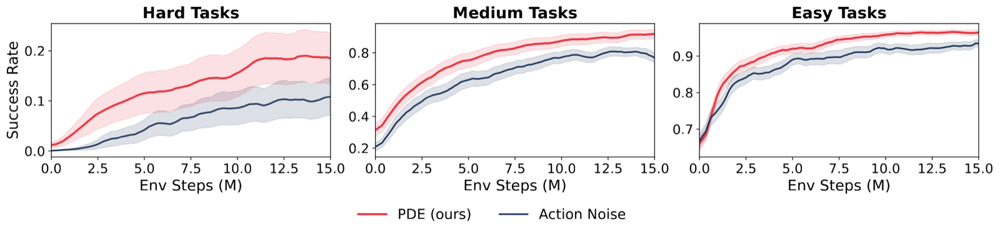
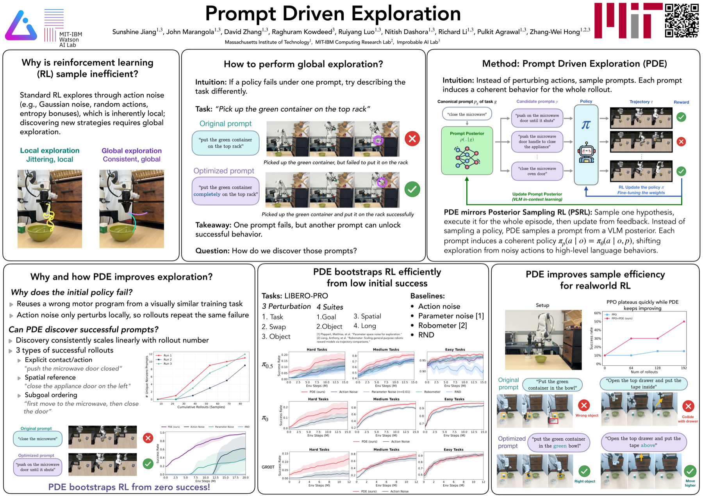

Real-world RL, done in under an hour.
Stop tuning the algorithms. Change the prompts.
Exploration is essential to RL since a policy cannot improve by repeatedly sampling the behaviors it already prefers. Standard methods inject stochasticity in the action space, but such jitter only yields rollouts close to the original. Escaping a weak policy often requires global perturbations that action noise cannot produce. LLMs and vision-language-action (VLA) models condition the policy on a natural language prompt, and since the rollout follows from it, modifying the prompt induces global changes. The challenge is finding prompts that induce useful global changes. With a weak policy that rarely succeeds, reward is too sparse to select on. Our idea is to refine prompts from the rollouts themselves: a vision-language model (VLM) reasons over the rollout video, diagnoses how the policy responded, and rewrites the prompt to elicit better behavior next time. This realizes posterior sampling at the level of prompts: the VLM maintains an implicit distribution over useful prompts and updates it from observed rollouts. We call this strategy Prompt Driven Exploration (PDE). Across manipulation and reasoning tasks, PDE enables RL to learn successful policies even from zero-reward starts, and improves sample efficiency more broadly.
Your VLA is stuck. Wiggling its joints harder won't help. So we hand the mic to a VLM: it watches the rollout, writes a brutally honest one-liner about what went wrong, and proposes a better prompt. Same policy weights, very different behavior.
Click any step to advance the pipeline below.

Posterior-sampling RL (PSRL) maintains a distribution over policies, samples one per episode, executes it, and updates from the observed trajectory and reward. It's a clean, temporally coherent exploration recipe — but for modern VLAs, a Bayesian posterior over billions of parameters is intractable to maintain or sample from.
PDE recovers PSRL through the language interface. For a frozen VLA with parameters \(\theta\), each prompt \(p\) induces a policy \(\pi_p(\cdot \mid o) := \pi_\theta(\cdot \mid o, p)\). So a distribution over prompts \(\rho(\cdot \mid g, H)\) induces a distribution over policies — restricted to the family reachable by the VLA's language conditioning. Drawing a policy hypothesis becomes choosing a prompt.



